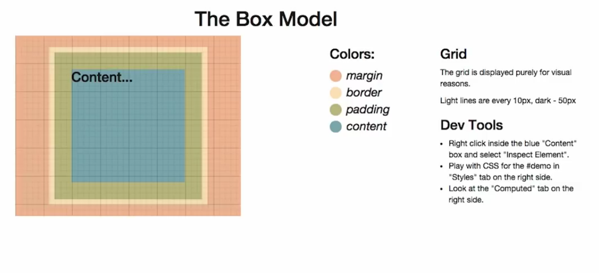

The world wide web is made up of computers that communicate with each other. You as the user interface with a computer that uses the internet to communicate with servers that are computers that are optimized to store files. HTTP is the protocol used to communicate with servers by way of a browser like Mozilla Firefox.
HTML markup describes what the text looks like and how it is arranges on the page. HTML (hyper-text markup language) is the main type of document on the web. All pages have HTML. HTML is a file just like an image, document, or mp3. Here is an example of a link to codepen. Whitespace is all treated the same no matter how many spaces or returns in the line.
One of the components within HTML code is the "tag." An element is the tag along with the contents. There are also HTML attributes like "href" or "src" which are used for links and images, respectively. Void tags do not have a closing tag. One example is the "br" tag which is also classified as an inline tag.
The "br" tag just ends the line. The "p" tage is a block element that creates an invisible box around te element that can be defined by length and width.
Computers are not smart and must be told exactly what to do. Once one understands the proper language to communicate with the computer, one can tell it exactly what to do when following the rules that the computer understands.
HTML files are the structure
CSS files are the style
JS files are the interactive components
One can inspect the code of a webpage using Chrome, by opening the developer tools within the menu. Once the developer tools have been opened, one can then find the elements when looking at the code. All elements are rectangular and by looking through the code you can read the same text within the code that is on the page.
There is a tree like structure within the code. Sideways triangles are an HTML element that can be expanded once clicked upon. One can take the tree structure and map it out in a flow-like diagram to understand how the elements branch out from one another and how they should be formatted within the code (i.e. indenatation) for easy reading. The DOM (Document Object Model) is the tree like structure of a page.
One can look at the styles (or rules) of the code (CSS) by highlighting elements then looking in "rules" within Firefox or "styles" within Chrome. CSS uses syntax and rules to determine how things look. For example, the code can say something like, "all items tied to 'article' should be 50px high and bright green."
Everything on a webpage is a box. You can right click on any element within a webpage, then click "inspect element" to go right to that element within the code. When inspecting an element that is a circle, if "border-radius" is unchecked, it will turn into a square. When a programmer is given an image of website design, they must Boxify the Design. To boxify a design, one would start with the bigger boxes, grouping the header elements, then image elements, and break it down into smaller elements from there. In order to create these boxes within HTML, one could use "div" tags and give each tag a class attribute which acts like a label on the box for easier organization.
CSS Code is used to add style to the programming. CSS stands for "Cascading Style Sheets." The "C" is by far the most important part of this phrase.CSS code also allows programmers to avoid repetition and not repeat commands.
Avoiding repetition is important because it allows the programmer to avoid errors by applying one style attribute to many HTML elements without having to re-write the same code for multiple elements. It also allows for quick changes to style. If a programmer did not use CSS, he or she would have to make multiple changes thoughout the HTML code when changing a style that affects multiple elements. This leads to errors or inconsistency within the page. For consistency purposes, one can assign a group of "divs" the same class and specifiy the style just one time for that class within CSS, rather than manually giving each lesson or concept within this webpage the same style by repeating code within HTML.
One can have several styles or sheets that are referenced within HTML. The rules (or styles) cascade in a manner that is similar to laws within the United States. For example there are national laws, state laws, municipality laws, and finally your own personal house rules. CSS is different from the way laws within the United States are applied because within CSS, the most specific rule is applied to every element. This means that house rules would be like the national law.
Rule Specificity and Priority rules are as follows:
- IDs are more specific than classes
- # refers to an ID
- . refers to a class
Inheritance is a key feature in CSS, it relies on the ancestor-descendant relationship to operate. Inheritance is the mechanism by which properties are applied not only to a specified element, but also to its descendants.[REF1] Inheritance relies on the document tree, which is the hierarchy of (X)HTML elements in a page based on nesting. Descendant elements may inherit CSS property values from any ancestor element enclosing them. In general, descendant elements inherit text-related properties, but box-related properties are not inherited. Properties that can be inherited are color, font, letter-spacing, line-height, list-style, text-align, text-indent, text-transform, visibility, white-space and word-spacing. Properties that cannot be inherited are background, border, display, float and clear, height and width, margin, min- and max-height and -width, outline, overflow, padding, position, text-decoration, vertical-align and z-index. [REF2]
Inheritance prevents certain properties from being declared over and over again in a style sheet, allowing the software developers to write less CSS. It enhances faster-loading of web pages by users and enables the clients to save money on bandwidth and development costs. [REF2]
Given the following stylesheet:
h1{
color:pink;
}
Suppose there is an h1 element with an emphasizing element (em) inside.
If no color has been assigned to the "em" element, the emphasized word will inherit the color of the parent element h1. The style sheet h1 has the color pink, hence the "em" element will likewise be in pink.

Sourced from Udacity Intro to Programming class materials
In order to make the calculation of the element size include both the border and padding and make it easier to calculate overall box size, the following language should be used in the CSS file. This was used to do the border exercise in class. Please note that this does not include margin.
*{
-webkit-box-sizing: border-box;
-moz-box-sizing: border-box;
-ms-box-sizing: border-box;
Box-sizing: border-box;
}
Box Sizing Pointers
1. HTML elements are boxes and each box has the 4 components shown in the Box Model image above.
2. It is possible to set the size of a box using either pixels (i.e. width: 460px;) or a percentage (i.e. height: 50%;). If a percentage is used, the size of the box will change depending on the screen size.
3. A max width can also be set so that a box will resize as necessary, but never go over a maximum width value (i.e. max-width: 460px;).
4. Since different browsers work differently, they may display the same code differently. In order to account for this, certain commands can be used to ensure uniformity of box sizing across platforms.
1. Look for natural boxes
2. Look for repeated styles and semantic elements
3. Write your HTML
4. Apply styles (From biggest to smallest)
5. Fix things